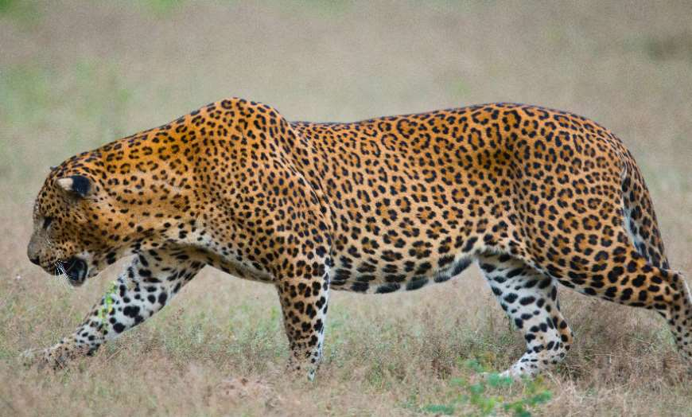
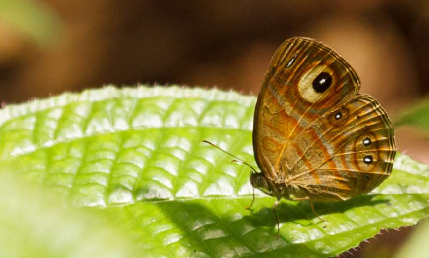

Incredible Places to see Wildlife in Sri lanka
Sri Lanka is a wildlife enthusiast’s paradise. This tropical island harbours an incredible selection of flora and fauna and is home to some of the finest national parks of the subcontinent. Home to a variety of species including the elusive leopard, regal elephant, blue whale and exotic birds, below is a list of the best places to see diverse and exciting wildlife on a tailor made holiday to Sri Lanka.
Yala National Park
Located on Sri Lanka’s south east coast and established as a protected area in 1938, Yala National
Park
is a large reserve with a mixture of habitats ranging from open parkland and dense jungle, to a
myriad
of flooded lagoons and high coastal sand dunes. This varied terrain supports a wide range of flora
and
fauna.
The popular Yala National Park is believed to have the world’s highest concentration of leopards.
The
average density of these majestic creatures is as high as one cat to every square kilometre,
although
sightings of the elusive leopard are still rare. Other animals you might spot whilst in Yala include
both sambar and spotted deer, wild boar, crocodile, langur and toque monkey, golden jackal and even
the
sloth bear during June and July when the palu tree fruits. Birdlife is also abundant here with over
200
species recorded and the reserve is a perfect combination of freshwater, marine, scrub and woodland
areas for the diversity of birds.
Sinharaja Forest Reserve
Sinharaja Forest Reserve
Sri Lankan leopardButterfly in Sinharaja / Image credit: Thimindu Goonatillake
A UNESCO-listed World Heritage Site and Biosphere Reserve, Sinharaja Forest Reserve is the last
viable area of primary tropical rainforest in Sri Lanka featuring tumbling waterfalls, bubbling
pools and emerald ferns. Situated in the south west of the island, the forest’s canopy towers up to
45m and astonishingly over two-thirds of the trees are endemic, many of them even considered rare.
However, one of the main reasons to visit Sinharaja is for the excellent birdwatching. The reserve
supports over 80% of the island’s bird species as well as being a habitat for endemic birds such as
the green-billed coucal, the blue magpie and the red-faced malkoha. Butterflies, insects, amphibians
and reptiles also live in this rich biodiverse reserve as well as mammals such as the rare leopard,
purple-faced langur, rusty spotted cat and three types of squirrel.


Udawalawe National Park

Udawalawe National Park just south of Sri Lanka’s central mountains, is a large reserve made up of
119 square miles of grassland, scrub jungle and riverine forest. The main attraction of the park is
the large concentration of Asian elephants found here, Udawalawe is home to over 400 of these gentle
giants and it is almost guaranteed to see them whilst on safari. A favourite hangout for the herds
of elephants is the Walawe Reservoir where the creatures come to drink during times of water
scarcity.
3 Udawalawe National Park
Udawalawe ElephantsUdawalawe Elephants
Udawalawe National Park just south of Sri Lanka’s central mountains, is a large reserve made up of
119 square miles of grassland, scrub jungle and riverine forest. The main attraction of the park is
the large concentration of Asian elephants found here, Udawalawe is home to over 400 of these gentle
giants and it is almost guaranteed to see them whilst on safari. A favourite hangout for the herds
of elephants is the Walawe Reservoir where the creatures come to drink during times of water
scarcity.
Udawalawe National Park is also home to some other exciting wildlife including the mugger crocodile,
sambar, spotted and barking deer, wild boar, water buffalo and jackal whilst the birding is
excellent with nearly 200 species recorded. November to March is the optimal time for birdwatching
expeditions with the chance to spot exciting raptors such as the changeable hawk-eagle, serpent
eagle and grey-headed fish eagle.

Horton Plains

Up in the central highlands, the Horton Plains measure up to an impressive 2,100 metres above sea
level, making it the highest plateau in Sri Lanka and consequently named of the ‘Roof of the
Island’. The plains comprise largely of cloud forest and lush montane grasslands which are rich in
endemic plants and animals that have adapted to the cool climate.
Whilst the elephant disappeared from this region back in the 1940s, the Horton Plains are home to a
wide variety of mammals, birds, amphibians and reptiles. The most common mammal seen is the sambar
deer who skirts through the long grasses and moves in large herds. Giant squirrels, wild boars,
rusty-spotted cats and purple-faced langurs are amongst some of the 24 species of mammal found here,
and the Horton Plains slender loris, one of the world’s most endangered primates, can also be found
in the highlands. Rare lizard species such as the rhino-horned lizard reside in the cloud forests,
and for bird enthusiasts there are both a huge range of migratory and endemic birds to watch.

Hikkaduwa Marine National Park

Declared a Nature Reserve in 1988 and then upgraded to national park status in 2002, the Hikkaduwa
National Park in the southern province is one of only two marine national parks in Sri Lanka.
Although the southern coastline is home to many coral reefs, the reefs in Hikkaduwa are the most
diverse and accessible and offer some of the country’s best snorkelling and diving opportunities.
The main reef of Hikkaduwa sits in a sheltered lagoon, it is a typical fringing reef with an average
depth of about 5 metres. The coral is colourful and diverse with around 60 different species
including boulder and encrusting corals, small-strands of Acropora coral and the cabbage-like
Montipora coral. The seagrass is home to sea turtles, whilst tropical reef fish such as parrot fish,
angel fish and butterfly fish skirt through the corals. Along the outer slope of the reef, blacktip
reef sharks can be found along with hawksbill and green turtles.
Information About Indigenous Animals in Sri lanka
- Distal portions of limbs, belly, throat, and tail with solid, large black spots; continuing on to feet.
- Face and neck with small, solid, black spots.